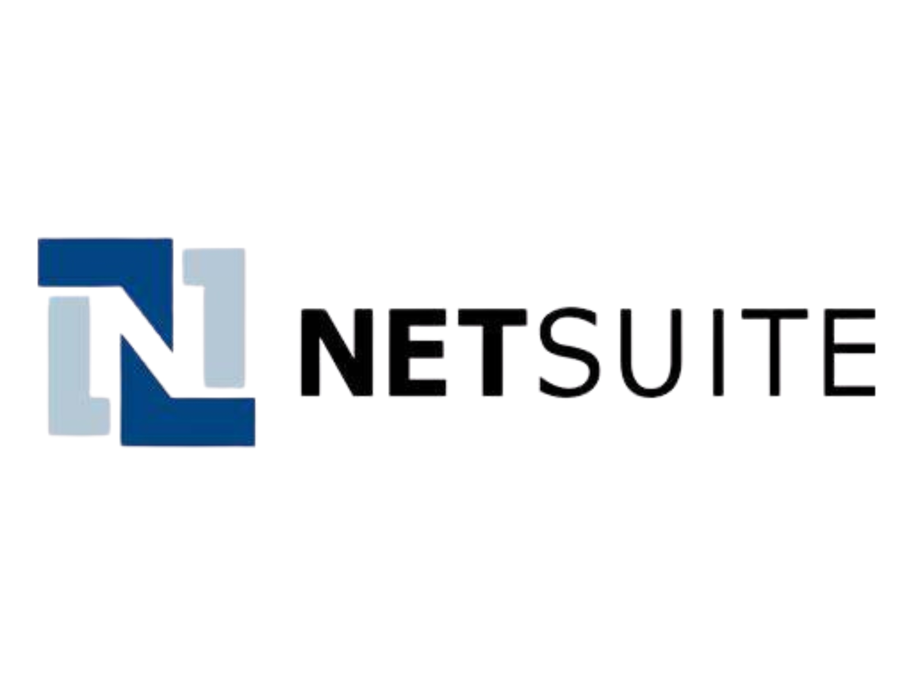

Integration Solution
Dell Boomi Integration Services
Unleash the full power of connected business — with lightning-fast Boomi integrations from SID Tech Corp.
SID Tech Corp brings unmatched expertise in Dell Boomi integration, enabling businesses to seamlessly connect applications, data, and systems across cloud and on-premises environments. Whether you use Salesforce, NetSuite, Workday, or any other ERP, CRM, or SaaS platform, our certified Boomi specialists will connect, transform, and streamline your data with precision and speed. From application integration and API management to real-time data automation, we design scalable, tailored solutions that accelerate business efficiency, drive innovation, and support your digital transformation goals.
Integration Solution
Workato Automation Services
Supercharge your business with intelligent automation — powered by Workato and SID Tech Corp.
With SID Tech Corp as your automation partner, you gain the power of intelligent integration through Workato — accelerating workflows, transforming data, and unifying your technology stack. No matter which ERP, CRM, or SaaS applications you use — Salesforce, NetSuite, Workday, SAP, and more — our Workato-certified experts design powerful integrations and dynamic workflows that move at the speed of your business. We build tailored solutions that transform data, automate complex processes, and unify your technology stack — all without slowing you down. With SID Tech Corp and Workato, you can eliminate silos, drive real-time insights, and fuel unstoppable growth through smarter, faster automation.

Integration Solution
NetSuite Integration Services
Transform your operations. Accelerate your growth. Dominate your industry — with NetSuite solutions from SID Tech Corp.
SID Tech Corp transforms NetSuite into a strategic asset, delivering powerful, end-to-end solutions that optimize every corner of your business, from finance and supply chain to CRM, eCommerce, and beyond. Whether you need a rapid NetSuite deployment, deep customization, complex integrations, or real-time automation, we design scalable strategies built for your unique goals. No matter your industry or size, we help you unlock the true power of NetSuite to drive agility, maximize efficiency, and future-proof your business for unstoppable success.
Development Solution
Software Development Services
Build innovative software solutions that drive your business forward — with SID Tech Corp.
From idea to deployment, SID Tech Corp engineers bespoke software solutions that scale with your business and deliver tangible results. Our expert developers leverage cutting-edge technologies to design, build, and deploy scalable applications tailored to your specific needs. Whether you require web, mobile, or enterprise-grade software, we deliver robust, user-centric solutions that enhance efficiency, streamline operations, and accelerate growth. From ideation to deployment and ongoing support, SID Tech Corp ensures your software is future-proof, secure, and aligned with your vision for success.
Hr's Solution
Staffing & Consulting Services
Unlock your business potential with expert staffing and strategic consulting — powered by SID Tech Corp.
SID Tech Corp connects you with top-tier talent and actionable consulting, empowering your business with the right expertise and strategies for success. Our team connects you with top-tier talent, from IT specialists to industry experts, ensuring the right skills drive your projects forward. Beyond staffing, our consulting services deliver actionable strategies to optimize processes, enhance productivity, and achieve your business objectives. Whether you need temporary expertise or long-term strategic guidance, SID Tech Corp partners with you to build a stronger, more agile organization ready for sustainable success.
Database Solution
Cloud Services
Transform your business with seamless cloud solutions — delivered by SID Tech Corp.
Harness the cloud with confidence — SID Tech Corp delivers end-to-end cloud solutions designed to scale with your goals and optimize your operations. Our certified experts guide you through every step of cloud adoption, from strategy and migration to optimization and management. Whether you’re transitioning to AWS, Azure, Google Cloud, or a hybrid environment, we design secure, scalable, and cost-effective solutions tailored to your needs. With SID Tech Corp, you can streamline operations, enhance agility, and unlock new opportunities for innovation, all while ensuring your cloud infrastructure supports your long-term business goals.
Business Solution
Business Process Services
Business Process Services (BPS) involve outsourcing specific business functions to specialized service providers — delivered by SID Tech Corp.
SID Tech Corp redefines operational excellence through intelligent Business Process Services that accelerate performance, reduce costs, and unlock enterprise agility. We don’t just optimize your back-office — we transform it into a powerhouse of productivity and innovation. From finance and HR to procurement, customer operations, and beyond, our BPS solutions harness automation, analytics, and deep domain expertise to streamline complexity, eliminate inefficiencies, and scale with your ambitions. Whether you're aiming to modernize legacy workflows or drive end-to-end transformation, SID Tech Corp delivers outcome-driven services engineered for growth, resilience, and competitive dominance.